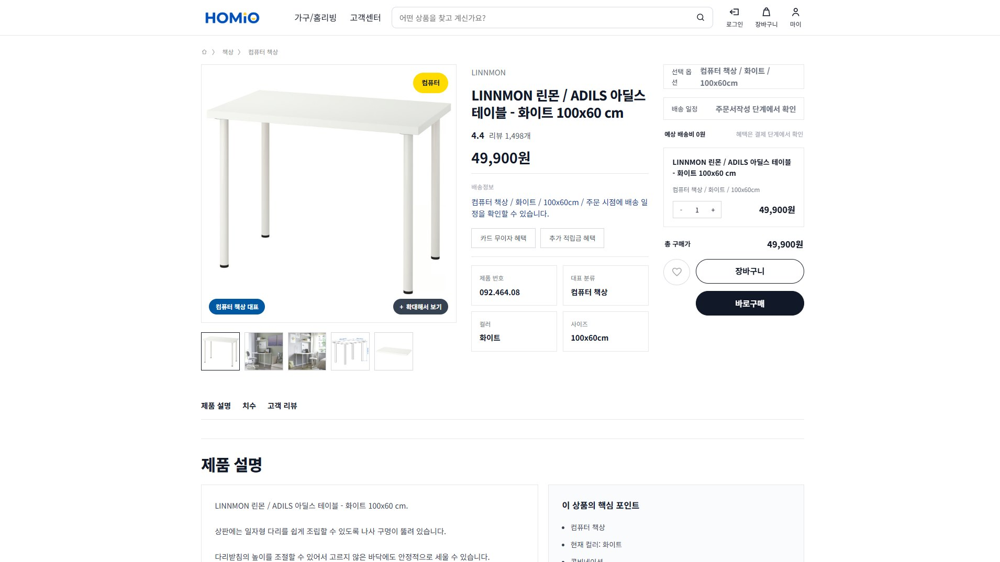
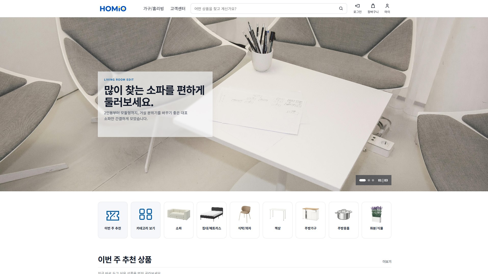
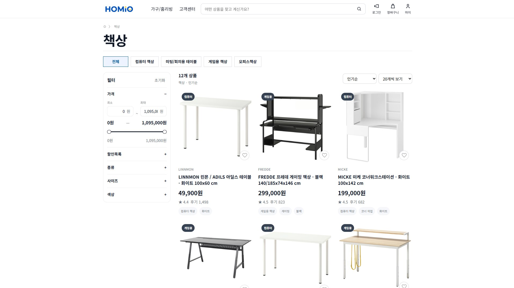
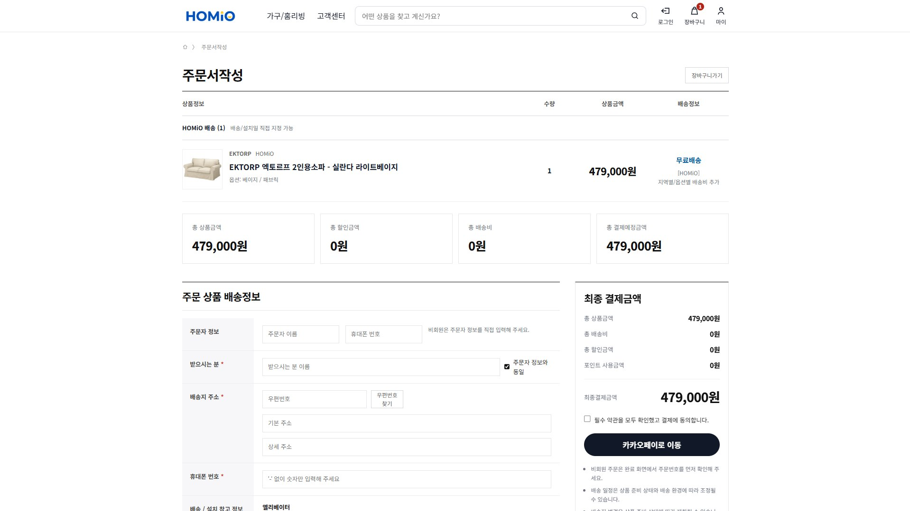
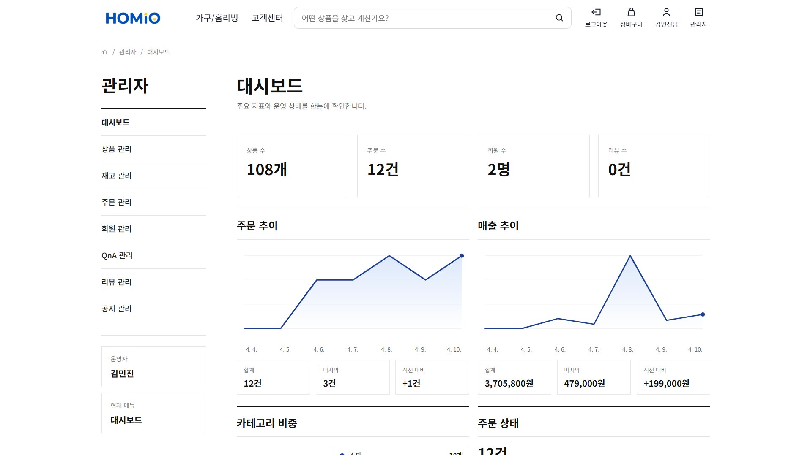

팀 프로젝트
가구 쇼핑몰
고객이 가구 옵션을 골라 주문하고 관리자는 재고와 주문을 관리하는 쇼핑몰입니다.
- 맡은 일
- 팀장으로 상품 옵션 선택부터 주문서까지 고객이 사용하는 화면을 설계하고 구현했습니다. 최종 동작 점검도 맡았습니다.
- 확인한 결과
- 주문 과정과 권한별 메뉴를 포함해 브라우저 시나리오 59건을 점검했습니다.


- 구분과 기간
- 팀 프로젝트 (2026.03.14~04.12)
- 사용 기술
 Vue 3, Pinia, Axios, Spring Boot, Spring Security / JWT,
Vue 3, Pinia, Axios, Spring Boot, Spring Security / JWT,  PostgreSQL,
PostgreSQL,  Docker
Docker
구매 화면과 관리자 권한
상품 하나를 사려는 고객이 장바구니에 담아 둔 다른 가구까지 결제하지 않도록 주문 대상을 구분했습니다. 같은 주문서라도 ‘바로구매’로 들어오면 지금 고른 상품만, ‘선택 상품 주문’으로 들어오면 장바구니에서 체크한 상품만 보여줍니다.
고객은 자신의 주문을 확인하고, 관리자는 여러 고객의 주문과 재고를 다뤄야 합니다. 저는 두 역할의 화면을 나눴고, 팀에서는 관리자 API도 서버에서 권한을 확인하도록 했습니다.
상품 탐색부터 주문 관리까지







